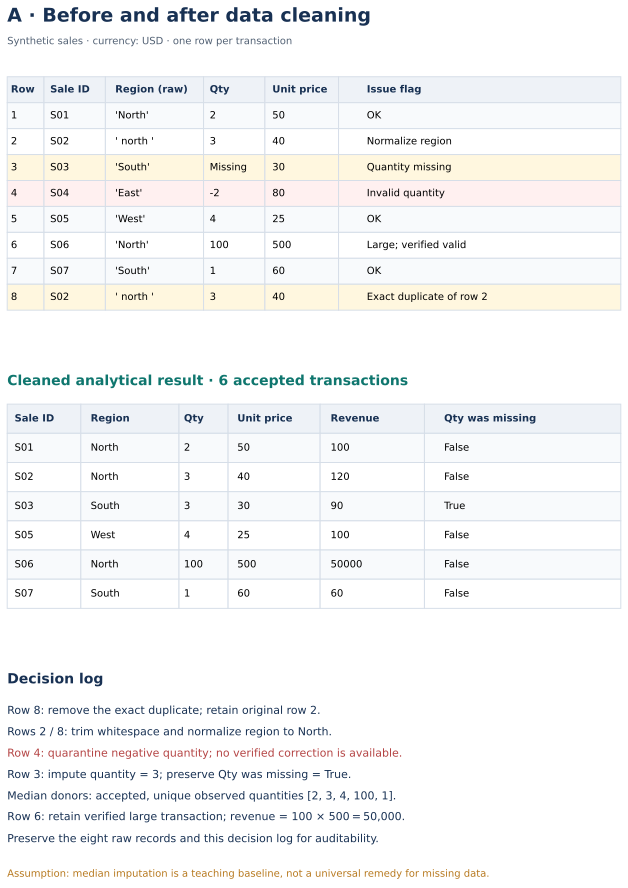
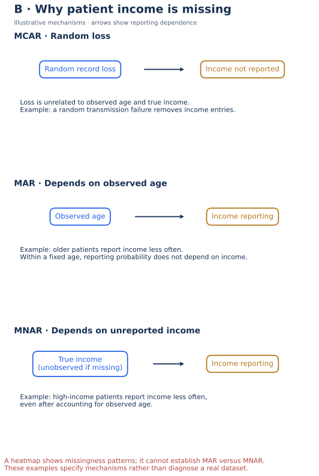

Lecture 5: Data Quality & Profiling
Completeness, consistency, validity, accuracy, missing-data mechanisms (MCAR / MAR / MNAR), deletion vs imputation decision framework, and practical profiling + imputation in Python.
1. Learning Objectives
- 1 Define completeness, consistency, validity, and accuracy with operational checks.
- 2 Profile a dataset using
.info(),.describe(), and missing-value counts. - 3 Distinguish MCAR, MAR, and MNAR and choose deletion vs imputation accordingly.
- 4 Apply mean / median / mode imputation and forward / backward fill in Pandas, and create “was_imputed” flags.
- 5 Document quality issues before any modeling or dashboard work.
2. Motivation — Why Quality Before Analysis
Garbage in, garbage out is not a slogan — it is a project failure mode. A beautiful dashboard built on incomplete, inconsistent, or invalid data will mislead decisions and destroy trust.
Operational data-quality dimensions
| Dimension | Check on the sales case |
|---|---|
| Completeness | Count missing Quantity; report a denominator and retained flags. |
| Validity | Parse dates; require positive Quantity under the no-returns assumption and Discount between 0 and 1. |
| Consistency | Normalize region labels; verify NetRevenue agrees with Quantity × UnitPrice × (1−Discount). |
| Uniqueness | Check the OrderID + LineID key; an exact duplicate is different from repeated OrderID across lines. |
| Accuracy | Reconcile to a trusted source. Passing format/range checks cannot prove a value is correct. |
| Timeliness | Check the extract timestamp and whether data are current enough for the decision. |
3. Types of Missing Data (MCAR / MAR / MNAR) — Deep Dive
Understanding why data is missing is more important than simply counting nulls. The mechanism determines whether deletion is safe and which imputation method is appropriate.
| Type | Definition | Implication for analysis |
|---|---|---|
| MCAR Missing Completely At Random |
Missingness is unrelated to any observed or unobserved variable. Pure chance. | Deletion is unbiased (but loses power). Single-value imputation is a baseline that distorts variability and can affect inference. |
| MAR Missing At Random |
Conditional on relevant observed variables, missingness does not depend on the missing values. | Impute using the observed predictors. Deletion can bias results. |
| MNAR Missing Not At Random |
Missingness depends on the unobserved value itself (or on unmeasured variables). | Hardest case. Requires domain knowledge, sensitivity analysis, or specialised models. |
Easy examples
- MCAR: A sensor randomly drops packets — the missing temperature is unrelated to the true temperature or any other field.
- MAR: Older patients are less likely to report income; conditional on observed age, reporting does not depend on income in this illustrative MAR mechanism.
- MNAR: Reporting depends on unreported income even after conditioning on observed information in this illustrative MNAR mechanism.
How to diagnose the mechanism (practical checks)
- Compute missing rate per column and overall.
- Compare distributions of other variables for rows with vs without the missing value.
- Plot a missingness matrix or heatmap of missing indicators.
- Talk to the data owner — domain knowledge often reveals MNAR patterns that pure statistics cannot.
4. Deletion vs Imputation — Decision Framework
Once you understand the missingness mechanism, choose an action. There is no universal “best” method — the right choice depends on the amount of missing data, the mechanism, and the downstream use (dashboard vs predictive model).
4.1 Decisions require context
| Situation | Recommended action |
|---|---|
| Low missingness with plausible MCAR | Consider deletion if assumptions and loss of precision are acceptable |
| Numeric missingness with a plausible MAR model | Consider methods using observed predictors; global median/mean is only a baseline, not a general MAR solution. |
| Categorical missing | Mode, or a new explicit category “Unknown” |
| Time-series / ordered data | Sort within each entity; choose a justified method. Backward fill and centered interpolation can leak future information. |
| High missingness in a column | Assess utility, missingness mechanism, and available alternatives; do not drop solely by percentage |
| MNAR suspected | Domain model, sensitivity analysis, or specialised methods; document the risk |
4.2 Common techniques
- Listwise deletion — drop any row that has a missing value in the variables you need. Simple, but reduces sample size and can bias results if data are not MCAR.
- Column drop — remove a variable that is mostly empty and low-value for the decision.
- Mean / Median / Mode — fast baseline. Prefer median for skewed numerics; mode for categoricals.
- Forward-fill / Backward-fill — for time-ordered data (use with care at the edges of each series).
- Model-based (later stage) — KNN, regression, multiple imputation. Document assumptions carefully.
4.3 Python — Syllabus methods + Titanic example
Use the course sample or the classic Titanic dataset (Age is a classic missing-value example).
import pandas as pd
import numpy as np
# Option A — course dataset
df = pd.read_csv("datasets/sample_accidents.csv")
# Option B — Titanic (public)
# df = pd.read_csv("https://raw.githubusercontent.com/datasciencedojo/datasets/master/titanic.csv")
# 1. Profile missingness
print(df.isna().sum().sort_values(ascending=False))
print((df.isna().mean() * 100).round(1).sort_values(ascending=False))
# 2. Preserve missingness before imputation
df["casualties_was_missing"] = df["casualties"].isna()
# Median / mode imputation (descriptive baseline)
df["casualties"] = df["casualties"].fillna(df["casualties"].median())
df["weather"] = df["weather"].fillna(df["weather"].mode().iloc[0])
# Flag remains unchanged after filling.
4.4 Impact of the choice
- Deletion reduces sample size → wider confidence intervals / less power.
- Mean imputation reduces variance artificially and can distort correlations.
- Median is more robust to outliers than mean.
- Creating an “Unknown” category preserves information that the value was missing — often useful for models and dashboards.
Download Jupyter Lab
Practice this lecture hands-on with the official course notebook:
⬇ L5_Data_Quality_and_Profiling.ipynb
Open in Jupyter Lab, VS Code, or Google Colab. All labs are listed in the labs index.
Summary
- Profile first: completeness, consistency, validity, accuracy.
- Missingness type (MCAR / MAR / MNAR) guides deletion vs imputation.
- Median, mode, and ffill/bfill are the teaching baseline tools in Python.
- Always create an “was_imputed” flag and document every quality decision.
Worked practice: Keep a cleaning decision log
Profile dirty_sales.csv; remove exact duplicates, standardize region strings, coerce dates, quarantine impossible quantities/dates, and flag missing quantity before imputation.
Interpretation check: Keep raw inputs. The median baseline does not restore missing-data uncertainty. Compare results including and excluding imputed rows; predictive imputation must be fitted on training data.
Download runnable/guided lab: L5 Data Quality and Profiling
Setup, all labs, datasets, DAX measures and capstone guidance · Interactive retail teaching report
Before and after data cleaning


Interpret: Why is S06 retained despite its unusually large revenue?
Its quantity and price were verified as valid. A statistical extreme alone is not an error.
Read diagram labels (mobile text)
- Row
- Sale ID
- Region (raw)
- Qty
- Unit price
- Issue flag
- 1
- S01
- 'North'
- 2
- 50
- OK
- 2
- S02
- ' north '
- 3
- 40
- Normalize region
- 3
- S03
- 'South'
- Missing
- 30
- Quantity missing
- 4
- S04
- 'East'
- -2
- 80
- Invalid quantity
- 5
- S05
- 'West'
- 4
- 25
- OK
- 6
- S06
- 'North'
- 100
- 500
- Large; verified valid
- 7
- S07
- 'South'
- 1
- 60
- OK
- 8
- S02
- ' north '
- 3
- 40
- Exact duplicate of row 2
- Synthetic sales · currency: USD · one row per transaction
- A · Before and after data cleaning
- Sale ID
- Region
- Qty
- Unit price
- Revenue
- Qty was missing
- S01
- North
- 2
- 50
- 100
- False
- S02
- North
- 3
- 40
- 120
- False
- S03
- South
- 3
- 30
- 90
- True
- S05
- West
- 4
- 25
- 100
- False
- S06
- North
- 100
- 500
- 50000
- False
- S07
- South
- 1
- 60
- 60
- False
- Cleaned analytical result · 6 accepted transactions
- Decision log
- Row 8: remove the exact duplicate; retain original row 2.
- Rows 2 / 8: trim whitespace and normalize region to North.
- Row 4: quarantine negative quantity; no verified correction is available.
- Row 3: impute quantity = 3; preserve Qty was missing = True.
- Median donors: accepted, unique observed quantities [2, 3, 4, 100, 1].
- R o w 6 : r e t a i n v e r i f i e d l a r g e t r a n s a c t i o n ; r e v e n u e = 1 0 0 × 5 0 0 = 5 0 , 0 0 0 .
- Preserve the eight raw records and this decision log for auditability.
- Assumption: median imputation is a teaching baseline, not a universal remedy for missing data.
MCAR, MAR and MNAR income reporting


Interpret: Does missingness varying by age prove MAR?
No. It can contradict MCAR, but MNAR may remain possible because unreported income is unobserved.
Read diagram labels (mobile text)
- Illustrative mechanisms · arrows show reporting dependence
- MCAR · Random loss
- Random record loss
- Income not reported
- Loss is unrelated to observed age and true income.
- Example: a random transmission failure removes income entries.
- B · Why patient income is missing
- MAR · Depends on observed age
- Observed age
- Income reporting
- Example: older patients report income less often.
- Within a fixed age, reporting probability does not depend on income.
- MNAR · Depends on unreported income
- True income
- (unobserved if missing)
- Income reporting
- Example: high-income patients report income less often,
- even after accounting for observed age.
- A heatmap shows missingness patterns; it cannot establish MAR versus MNAR.
- These examples specify mechanisms rather than diagnose a real dataset.
Your reading progress
Completion is self-reported reading progress, not a mastery score. Use the lab and interpretation checks to assess understanding.